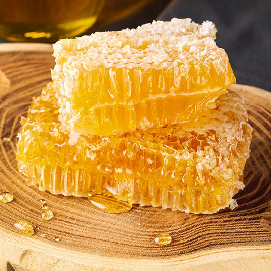
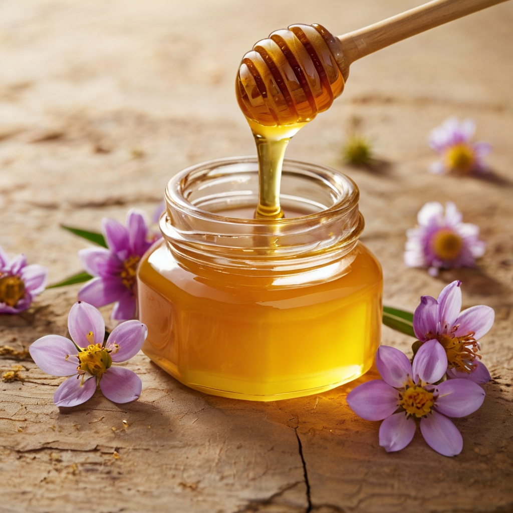

Польза меда
Мед — это не только вкусное лакомство, но и ценный источник витаминов и минералов. Он укрепляет иммунитет, помогает бороться с простудой и улучшает пищеварение.
Пчелы собирают нектар с цветов, который затем превращают в мед. Этот процесс требует огромных усилий и времени, что делает мед уникальным продуктом.
Мед также используется в косметологии для ухода за кожей и волосами. Его натуральные свойства помогают сохранить молодость и красоту.
Жизнь пчел
Пчелы — удивительные насекомые, которые живут в строгой иерархии. В улье есть матка, рабочие пчелы и трутни, каждый из которых выполняет свою роль.
Рабочие пчелы собирают нектар, пыльцу и воду, а также защищают улей от врагов. Матка отвечает за воспроизводство, а трутни помогают в оплодотворении.

Пчелы играют важную роль в опылении растений, что делает их незаменимыми для экосистемы. Без пчел многие растения не смогли бы плодоносить.
Пчелиный улей
Улей — это сложная структура, состоящая из сот, где пчелы хранят мед, выращивают потомство и живут. Каждая ячейка сота имеет шестиугольную форму, что позволяет максимально эффективно использовать пространство.
Виды меда
Существует множество видов меда, каждый из которых обладает уникальным вкусом и свойствами. Например, липовый мед известен своими успокаивающими свойствами, а гречишный — высоким содержанием железа.
Цветочный мед получается из нектара различных цветов, а монофлерный — из одного вида растений. Каждый вид меда имеет свои особенности и пользу для здоровья.
Пчеловодство
Пчеловодство — это древнее ремесло, которое требует знаний и опыта. Пчеловоды заботятся о пчелах, собирают мед и другие продукты пчеловодства, такие как прополис и пчелиный воск.
Современное пчеловодство использует инновационные методы для повышения урожайности и защиты пчел от болезней.